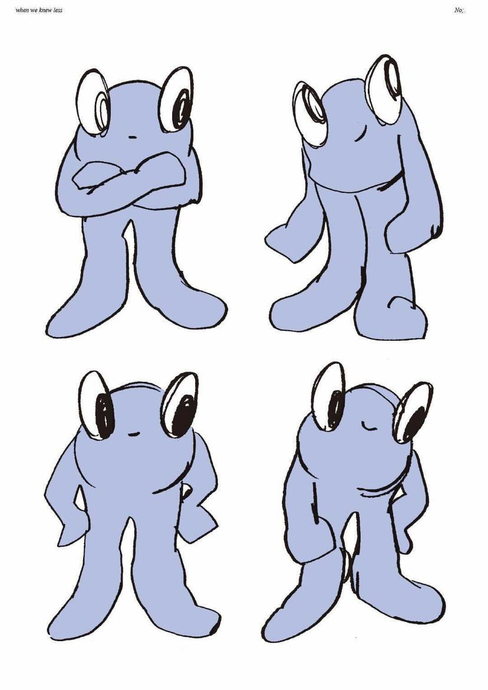
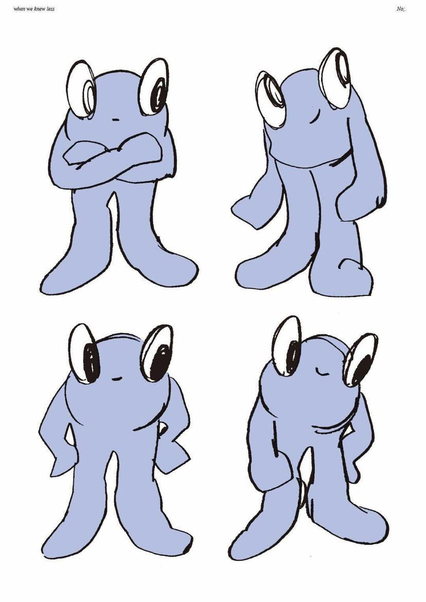

Project
When We Knew LessYear
2022Client
Haich Ber NaDiscipline
Identity, product design, web designBrand identity for Haich Ber Na's fourth EP 'When We Knew Less'. The theme of this project centers around a fictional location named 'St. Leville'. The mascot I designed for St. Leville can be seen throughout the branding, merch and website.
 



The mascot and logo development process began with numerous pencil sketches. I then reinterpreted the sketches into vector graphics, experimenting with the illustration style, form and thickness. This process resulted in the two outcomes below. On the left is the final mascot logo, on the right the final mascot design.


We then worked with Jellyhead Studios in south London to develop a life-sized costume to be featured on the EP cover and promotional content.